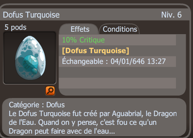

- Description : Le Dofus Turquoise fut créé par Aguabrial, le Dragon de l’Eau. Quand on y pense, c’est fou ce qu’un Dragon peut faire avec de l’eau…
- Niveau : 160
- Effets : 10% crtique
- Effet passif : Pour chaque coup critique occasionné, les dommages finaux sont augmentés de 1% pendant 3 tours. Cumulable 10 fois
- Obtention : Récompense de la série de quête du succès "Bleu Turquoise"